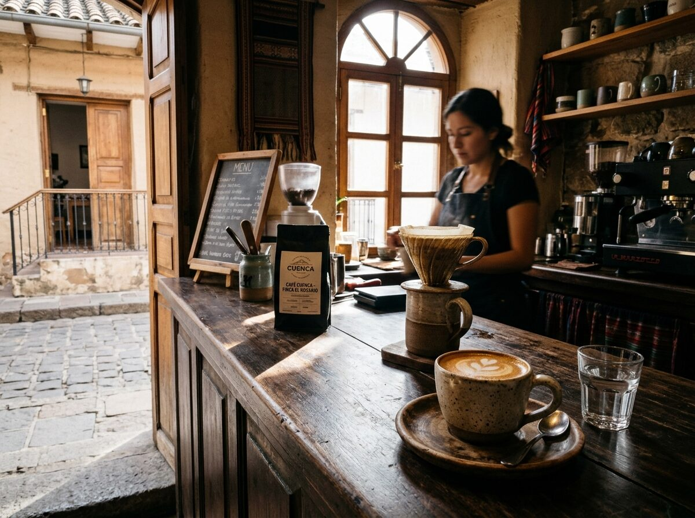
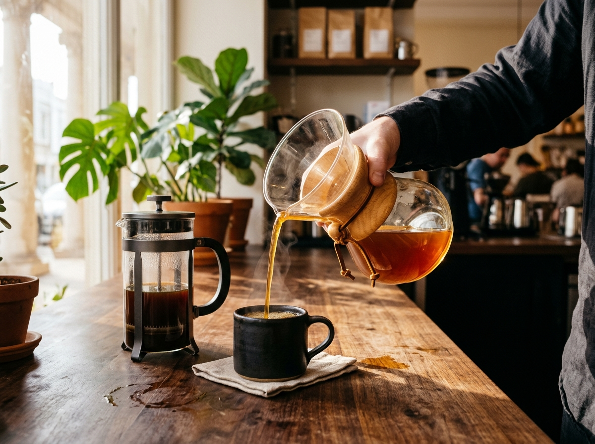
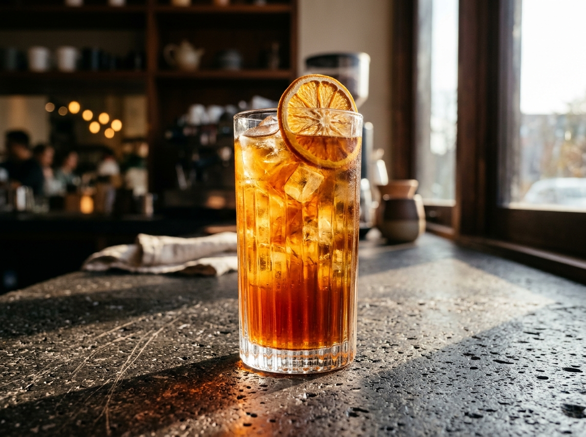
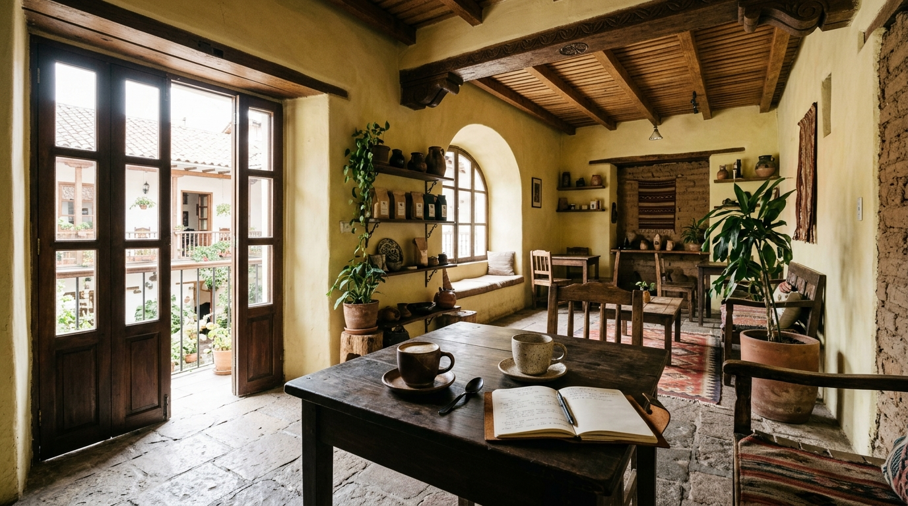
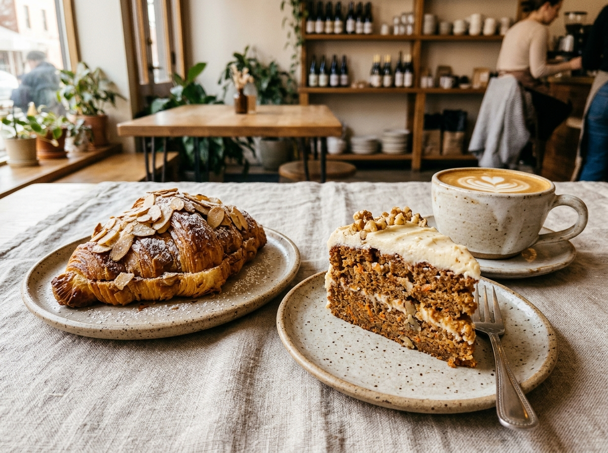

Enfoque ecuatoriano ilustrativo
Presenta perfiles demostrativos asociados a distintas alturas y procesos del sur del Ecuador sin inventar historias reales de fincas ni certificaciones.
Barra de especialidad · Barrio El Vado, Cuenca
Origen Cuenca es una cafetería ficticia diseñada por AV·STUDIO para mostrar cómo una barra de autor presenta perfiles de café ecuatoriano, métodos filtrados y una carta referencial en USD lista para consultar por WhatsApp.

Filosofía del café
Más allá de listar bebidas, este modelo organiza granos ecuatorianos de ejemplo, métodos de extracción y precios referenciales para orientar al visitante antes de acercarse a la barra o escribir por WhatsApp.
Presenta perfiles demostrativos asociados a distintas alturas y procesos del sur del Ecuador sin inventar historias reales de fincas ni certificaciones.
Detalla cómo cambia la taza entre un filtrado V60 o Chemex, una Prensa Francesa para compartir o una infusión fría de 16 horas.
La selección de barra calcula un subtotal orientativo en USD y arma una consulta demostrativa hacia WhatsApp sin simular pagos ni inventario real.
Carta digital referencial en USD
Precios referenciales de demostración en dólares estadounidenses (USD). Agrega artículos o pulsa «Consultar» para incluirlos en tu resumen de WhatsApp.
Perfiles ficticios de demostración · Ecuador
Los nombres de lotes, altitudes y notas corresponden a perfiles ficticios creados para esta muestra. No constituyen trazabilidad certificada ni acuerdos con productores reales.
Ficha de perfil ilustrativo
Métodos contemplados en la barra
Fotografías ilustrativas dedicadas a los métodos descritos en la carta y los perfiles de demostración: filtrados manuales, inmersión en prensa y extracción lenta en frío.

Extracción controlada mediante filtro de papel que entrega una taza limpia y aromática, sugerida para resaltar matices cítricos y de panela.

Dos propuestas contrastantes: claridad sedosa en Chemex frente al cuerpo denso e inmersión completa de la Prensa Francesa pensada para dos tazas.

Infusión lenta de dieciséis horas en agua fría para suavizar la amargura natural y servir en vaso alto con naranja deshidratada.
Experiencia en Barrio El Vado
El recorrido combina espacio tranquilo para conversar o trabajar junto a ventanales altos con una vitrina corta de repostería artesanal pensada para acompañar cafés de origen.


Cuaderno visual de barra
Fotografías ilustrativas exclusivas de esta galería. Haz clic en cualquier escena para ampliarla.
Ubicación, horarios y consultas (Ejemplo)
Origen Cuenca es una cafetería ficticia de muestra creada por AV·STUDIO. Las consultas por WhatsApp conectan directamente con el estudio de diseño web para cotizar un sitio a medida.
Prepara tu selección de carta arriba o escríbenos directamente para adaptar esta estructura con tu menú, tuestes y ubicación reales.